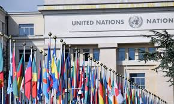

The United Nations was founded in 1945 after World War II with the objective of preventing another global conflict. Its mission is to maintain international peace and security, promote human rights, encourage social and economic development, and foster cooperation between nations. Today, almost every country in the world is a member of the organization.
Throughout its history, the UN has organized peacekeeping missions in conflict zones, provided humanitarian assistance during natural disasters, and supported global initiatives against poverty and disease.

The UN General Assembly and the Security Council are two of its most important organs, where global decisions and debates take place.
However, despite these achievements, the effectiveness of the UN is often questioned. Powerful countries in the Security Council can use their veto power to block resolutions, which sometimes prevents decisive action in international crises.
In conclusion, while the UN has achieved important successes in diplomacy and humanitarian aid, its ability to prevent major wars remains limited. Its effectiveness ultimately depends on the cooperation of its member states.